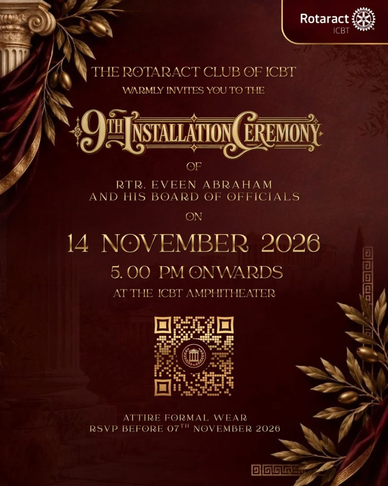
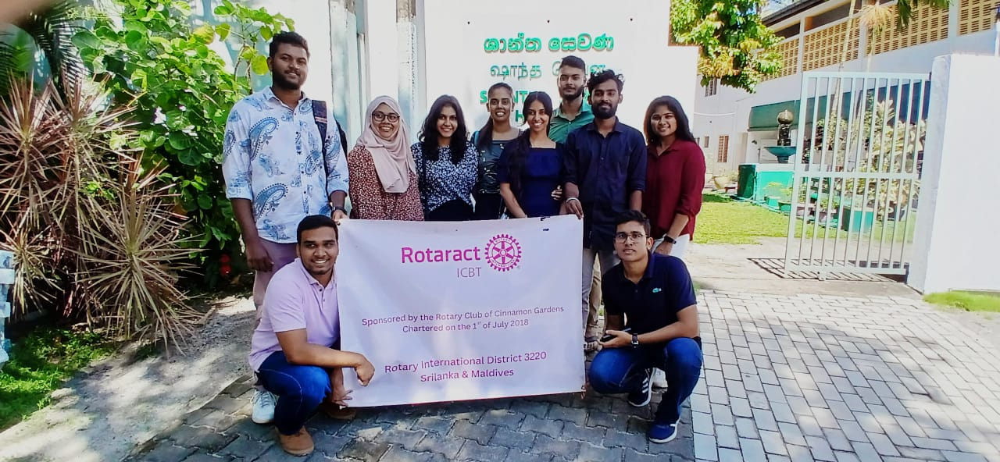
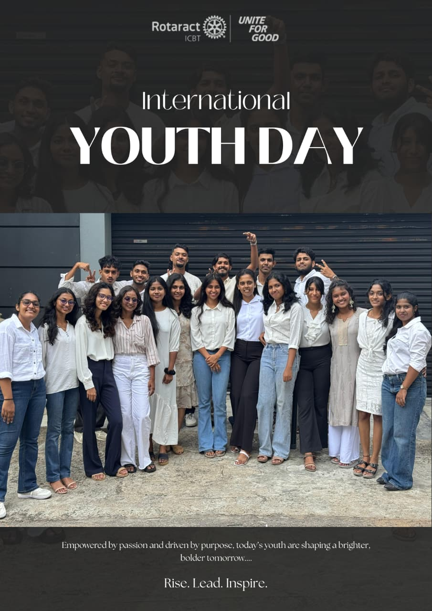
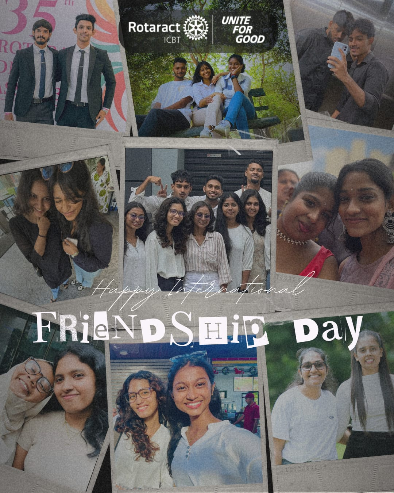
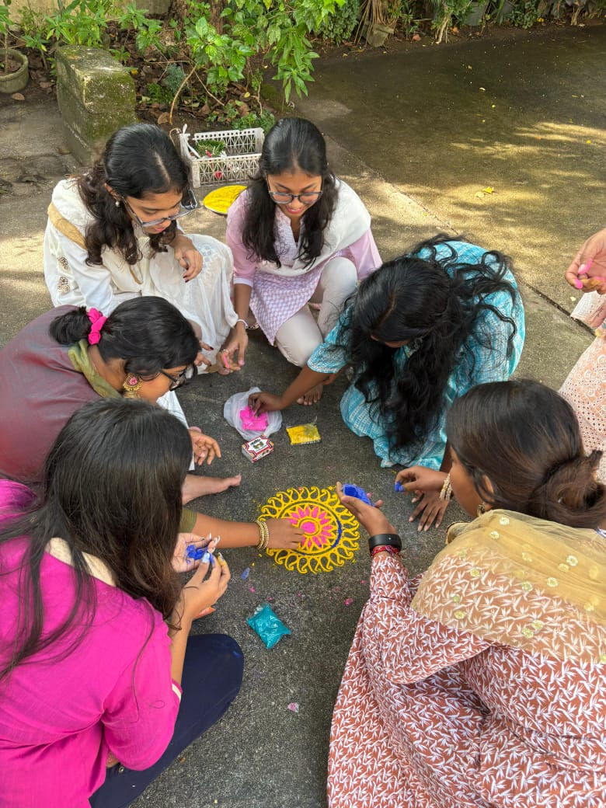
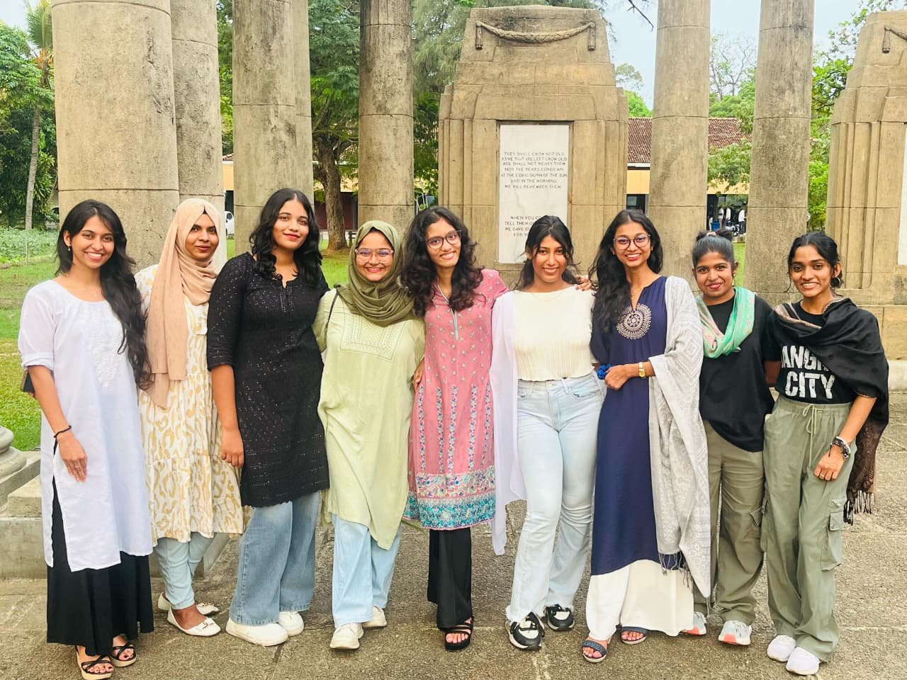
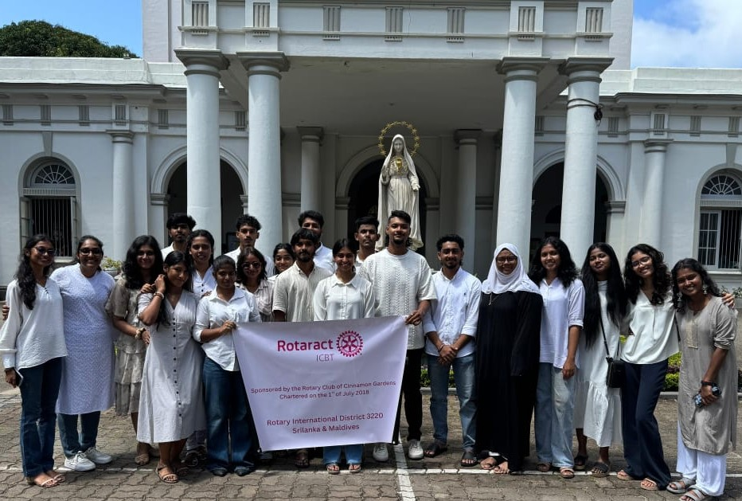
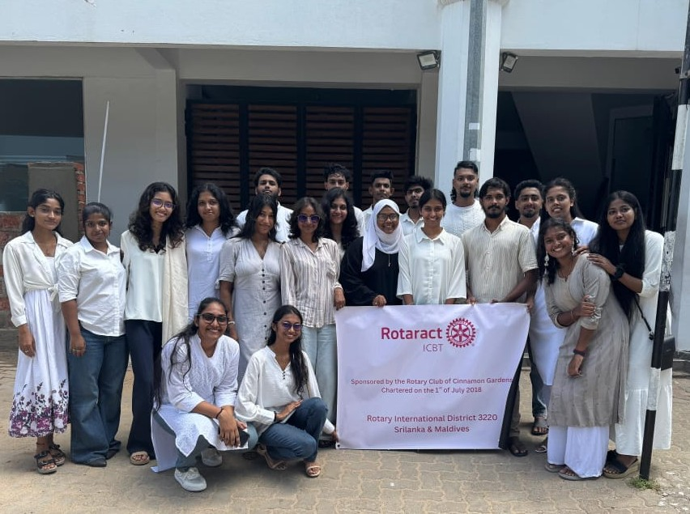

The Sacred Creed
Forged under the sponsorship of the Rotary Club of Cinnamon Gardens, uniting youth in unyielding fellowship and noble service.
Who We Are
Chartered July 1, 2018Chartered under Rotary District 3220, the Rotaract Club of ICBT unites passionate young scholars and leaders from diverse ethnic and academic backgrounds.
Together, we build bridges of empathy, drive leadership development, and create lasting community impact across Sri Lanka and the Maldives.
Our Mission
The Sacred QuestTo transform the vibrant dreams of collegiate youth into sustainable, high-impact actions through dedicated humanitarian service, ethical leadership, and innovation.
We cultivate a crucible of changemakers equipped with the character, skills, and compassion required to uplift vulnerable communities.
Our Vision
The Horizon AheadTo illuminate the world through collective fellowship and demonstrate the transformative power of youth-led Rotary action.
We envision a future where borders dissolve in global solidarity, where every aspiring soul finds empowerment, and where "Service Above Self" is our guiding constellation.
“You have proved that when individuals come together under a sacred oath of service, wondrous triumphs unfold. That is the bedrock upon which noble nations stand.”
— Rotaract & Rotary International EthosThe Greek Chronicle
Epochs of leadership, resilience, and fellowship recorded in the annals of District 3220.
Charter & Foundation
The Rotaract Club of ICBT was officially consecrated on July 1, 2018. Rtr. Shameen Samarawickrema was installed as charter president, setting a high standard for service.
District Emergence & Gold Honors
Celebrated as one of the best emerging clubs in District 3220. Rtr. Methmi Pinnagoda was awarded the Golden Award for Best Secretary.
Virtual Conquests & PETS/SETS
Led by Rtr. PP. Basharath Isamath, the club conquered pandemic barriers with virtual initiatives, successfully hosting PETS & SETS 2020.
District Citation & Inclusion
Led by Rtr. PP. Tashya Wickramarachchi, championing female empowerment, diversity, and winning the Bronze District Citation.
36 Triumphs & UGRAM Recognition
Under Rtr. PP. Umar Shafeek with theme "Transforming Lives, Uniting Hearts", completing 36 impactful projects including the Korean Fusion Festival.
Global Expansion & Youth Leadership
Led by Rtr. IPP. Afzal Rawsdeen and President Rtr. Dinya Himasari — driving major community welfare initiatives, international linkages, and dynamic youth forums.
Six Spartan Shields
Six pillars aligned with classical Hellenic archetypes, each wielding distinct strengths in service of humanity.
Community Service
Direct humanitarian aid, rural education drives, health camps, and environmental stewardship uplifting underprivileged populations across the island.
Explore QuestsInternational Service
Twin-club partnerships, cross-cultural youth exchanges, and global peace forums connecting our club with Rotaract families spanning 40+ countries.
Global AlliancesProfessional Dev
Executive masterclasses, resume clinics, industry mentorship sessions, and entrepreneurship bootcamps preparing youth for future leadership.
Seek WisdomClub Service
Fostering lifelong brotherhood and sisterhood, organizing bonding retreats, fellowship nights, installations, and internal talent celebrations.
The BrotherhoodPublic Relations
Amplifying the club’s triumphs through striking visual media, press releases, digital journalism, and storytelling that inspires youth action.
The HeraldSports & Recreation
Promoting holistic wellness, competitive athletic tournaments (basketball, cricket, futsal), and outdoor wellness challenges across campuses.
The ArenaMuseum of Deeds
Curated records of our ongoing, upcoming, and triumphant community expeditions.

9th Installation9th Installation Ceremony
“Nine Years of Legacy. A Future of Impact. ✨”
We invite you to join us in welcoming our new Board of Directors as they embark on a new journey of leadership, fellowship, and lasting impact.
Register for CeremonyBlog Chronicles
Stories, reflections, and philosophical insights penned by the scribes and leaders of Rotaract ICBT.

Golden Hour 2.0: Where Time Slowed Down
Golden Hour 2.0 gave us an evening where we could step away from our routines, relax, and spend time together as a club without worrying about what came next.
Read ChroniclePawsitive Impact: Humane Welfare
Strengthening community responsibility through animal shelter support, rabies vaccinations, feeding drives, and compassionate care for street animals.
Read Chronicle
Sacred Donations & Relief Mission
Delivering essential educational supplies, nutrition packages, and humanitarian care to underserved schools and vulnerable families in rural regions.
Read Chronicle
International Youth Day Celebration
Mobilizing collegiate youth through interactive workshops, leadership forums, and high-impact social initiatives across our community.
Read Chronicle
International Friendship Day Conclave
Discover the bonds of eternal camaraderie that unite Rotaract members across campuses, forging lifelong partnerships and leadership synergy.
Read ChronicleInscriptions of Praise
Endorsements engraved on ancient tablets of tribute from global dignitaries and Rotary guides.
“Rotarians and Rotaractors perform remarkable work. You actively champion peace and help the United Nations attain its global sustainable development goals.”
“You prove that when collegiate youth unite with selfless vision, magnificent wonders occur. That is the true pillar upon which great communities stand.”
“The Rotaract Club of ICBT exemplifies the genuine spirit of Fellowship Through Service. Their enthusiasm and dedication to youth leadership is exemplary.”
Rotary Club of Cinnamon Gardens
Hellenic Mosaic Gallery
A vibrant mosaic capturing moments of fellowship, community quests, and celebrations.






The Council Agoras
Connect with our executive secretariat, avenue leads, or transmit your inquiry directly to our council.
Collegiate Sanctuary
ICBT Colombo Campus
No. 36, De Kretser Place, Bambalapitiya,
Colombo 04, Sri Lanka
Hermes Dispatch
Instant inquiry line for project partnerships, prospective members, and district collaborations.
+94 74 086 0054Sacred Chronicle
Formal secretarial letters, twin-club proposals, sponsorship invitations, and district missives.
icbtrotaract@gmail.comInscribe A Missive
Transmit your message or inquiry directly to the ArchonsCouncil Assemblies & Agoras
General meetings are convened fortnightly at the ICBT Main Auditorium. Fellow Rotaractors and visiting guests from Rotary International District 3220 & global districts are cordially welcomed.